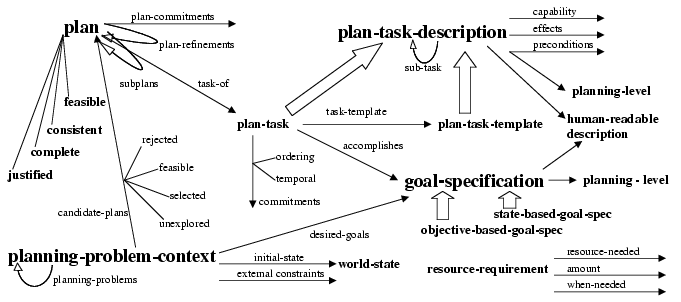

|
Main
Description
Status
Research
Publications
Demo
People
Funding
Links
|
Research
In order to provide broad coverage of many different planning
approaches, we represent a plan in terms of contexts, which
capture planning background information that is independent of a
particular planning episode, external constraints, for
example user advice and preferences, and commitments made
during the planning process.
The overview of the PLANET ontology below shows the central concepts
and relations. Some arrows do not have targets, indicating relations
whose ranges are not fixed by the ontology.

We have used Planet to represent plans in three real-world domains
with very different features:
In an air campaign planning domain, where plans are expanded by
humans an a task-decomposition structure.
In a COA analysis domain, where plans are entered by experts
and tasks have explicitly entered purposes and optionally supporting
tasks.
In a workarounds domain to replace or repair damaged bridges,
where plans were automatically generated and then evaluated by a
separate tool.
|